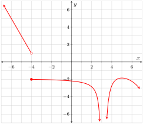
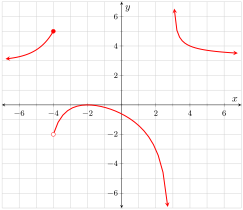

\(\frac{\fe{v}{7.5}-\fe{v}{0}}{7.5-0}=-13\frac{1}{3}\text{.}\) This value tells us that during the first 7.5 s of descent, the average rate of change in the coaster’s velocity is \(-13\frac{1}{3}\,\frac{\text{ft/s}}{\text{s}}\text{.}\) In other words, on average, with each passing second the velocity is \(13\frac{1}{3}\,\text{ft}{s}\) less than it was the preceding second. We could also say that the average acceleration experienced by the coaster over the first 7.5 s of descent is \(-13\frac{1}{3}\,\frac{\text{ft/s}}{\text{s}}\text{.}\)
1.4.14.
Solution.
\(\frac{\fe{h}{3}-\fe{h}{1.5}}{3-1.5}=0\text{.}\) This value tells us that the average velocity experienced by the ball between the 1.5th second of play and the third second of play is 0 m⁄s. Please note that this does not imply that the ball doesn’t move; it simply means that the ball is at the same elevation at the two times.
1.4.15.
Solution.
\(\frac{\fe{P}{29}-\fe{P}{1}}{29-1}=-0.1\text{.}\) This value tells us that between the first swing and the 29th swing the average rate of change in the pendulum’s period is \(-0.1\frac{\text{s}}{\text{swing}}\text{.}\) In other words, on average, with each passing swing the period decreases by a tenth of a second.
1.4.16.
Solution.
\(\frac{\fe{a}{120}-\fe{a}{60}}{120-60}=0.13\text{.}\) This value tells us that during the second minute of flight, the average rate of change in the rocket’s acceleration is 0.13 mph⁄s·s. In other words, on average, with each passing second the acceleration is 0.13 mph⁄s more than it was the preceding second. You might have noticed that since the acceleration function is linear, the rate of change in the acceleration is constant. That is, with each passing second the acceleration actually is0.13 mph⁄s more than it was the preceding second.
2Limits and Continuity 2.14Supplement
2.14.1.
Solution.
The relevant pattern in the \(y\) column is that \(y\) appears to be positive and growing by a little more than a factor of \(10\) every time \(t\) is negative and grows by a factor of \(10\text{.}\) It’s not guaranteed, but this suggest that \(\lim\limits_{t\to-\infty}\fe{g}{t}=\infty\text{.}\) In this circumstance, we say that \(\lim\limits_{t\to-\infty}\fe{g}{t}\) does not exist.
2.14.2.
Solution.
The relevant pattern in the \(y\) column is the powers of \(10\text{.}\) The first nonzero digit is moving farther and farther to the right of the decimal point. So the \(y\)-values are approaching zero. This suggest that \(\lim\limits_{x\to\infty}\fe{f}{x}=0\text{.}\) So \(\lim\limits_{x\to\infty}\fe{f}{x}\) exists.
2.14.3.
Solution.
You should definitely recognize decimals approaching common fractions. Good catch if you noted the \(t\) was approaching \(\frac{1}{3}\) only from the left. The suggested limit is \(\lim\limits_{t\to\frac{1}{3}^{-}}\fe{z}{t}=\frac{2}{3}\text{,}\) and this (one-sided) limit exists.
2.14.4.
Solution.
Stay focused when determining “from the left” or “from the right”; that can get tricky…especially when the numbers are negative. The limit suggested here is \(\lim\limits_{\theta\to-1^{+}}\fe{g}{\theta}=3{,}000{,}000\text{.}\) So this limit exists.
2.14.5.
Solution.
The last entry in the output column is the same in the previous exercise. Hopefully you recognized that you need to look at the pattern in the output, not just the last entry. Recognizing that \(t\) approaches \(\frac{7}{9}\) might requires some guessing and checking. The limit suggested here is \(\lim\limits_{t\to\frac{7}{9}^{+}}\fe{T}{t}=\infty\text{.}\) So we say that this limit does not exist.
2.14.6.
Solution.

2.14.7.
Solution.

2.14.8.
Solution.
\(f\) is discontinuous from both directions at \(0\) and the discontinuity is not removable. \(f\) is discontinuous at \(3\) although it is continuous from the left at \(3\text{.}\) The discontinuity is not removable. (The problem is that the limits are different from the left and right of \(3\text{.}\)) \(f\) is discontinuous from both directions at \(4\) but the discontinuity is removable (\(\lim\limits_{x\to4}\fe{f}{x}=1\)). \(f\) is discontinuous from both directions at \(2\pi\) but the discontinuity is removable (\(\lim\limits_{x\to2\pi}\fe{f}{x}=1\)).
2.14.9.
Solution.
Because the two formulas are polynomials, the only number where continuity is at issue is \(3\text{.}\) The top formula is used at \(3\text{,}\) so \(\fe{g}{3}\) is defined regardless of the value of \(k\text{.}\) Basically all we need to do is ensure that the limits from the left and the right of \(3\) are both equal to \(\fe{g}{3}\text{.}\) We have:
So \(g\) will be continuous at \(3\) (and, consequently, over \(\ointerval{-\infty}{\infty}\)) if and only if \(9+2k=9-4k\text{.}\) This gives us \(k=0\text{.}\) Doh! Turns out the \(g\) isn’t piecewise at all, it’s simply the parabolic function \(\fe{g}{t}=t^2\text{.}\)
2.14.10.
Solution.
\(\lim\limits_{x\to4^{-}}\left(5-\frac{1}{x-4}\right)=\infty\text{.}\) This limit does not exist.
\begin{align*}
\lim\limits_{x\to2^{+}}\frac{x^2-4}{x^2+4}&=\frac{\lim\limits_{x\to2^{+}}\left(x^2-4\right)}{\lim\limits_{x\to2^{+}}\left(x^2+4\right)}&&\text{LL A5}\\
&=\frac{\lim\limits_{x\to2^{+}}x^2-\lim\limits_{x\to2^{+}}4}{\lim\limits_{x\to2^{+}}x^2+\lim\limits_{x\to2^{+}}4}&&\text{LL A1 and A2}\\
&=\frac{\left(\lim\limits_{x\to2^{+}}x\right)^2-\lim\limits_{x\to2^{+}}4}{\left(\lim\limits_{x\to2^{+}}x\right)^2+\lim\limits_{x\to2^{+}}4}&&\text{LL A6}\\
&=\frac{2^2-4}{2^2+4}&&\text{LL R1 and R2}\\
&=0&&\text{This limit does exist.}
\end{align*}
2.14.13.
Solution.
\begin{align*}
&\phantom{={}}\lim\limits_{x\to2^{+}}\frac{x^2-4}{x^2-4x+4}&&\text{Can't apply LL A1--A6; form is $\tfrac{0}{0}$}\\
&=\lim\limits_{x\to2^{+}}\frac{(x-2)(x+2)}{(x-2)^2}\\
&=\lim\limits_{x\to2^{+}}\frac{x+2}{x-2}&&\text{LL A7}\\
&=\infty&&\text{This limit does not exist.}
\end{align*}
2.14.14.
Solution.
\begin{align*}
&\phantom{={}}\lim\limits_{x\to\infty}\frac{\fe{\ln}{x}+\fe{\ln}{x^6}}{7\fe{\ln}{x^2}}&&\text{Can't apply LL A1--A6; form is $\tfrac{\infty}{\infty}$}\\
&=\lim\limits_{x\to\infty}\frac{\fe{\ln}{x}+6\fe{\ln}{x}}{14\fe{\ln}{x}}\\
&=\lim\limits_{x\to\infty}\frac{7\fe{\ln}{x}}{14\fe{\ln}{x}}\\
&=\lim\limits_{x\to\infty}\frac{1}{2}&&\text{LL A7}\\
&=\frac{1}{2}&&\text{LL R2}
\end{align*}
So this limit does exist.
2.14.15.
Solution.
\begin{align*}
&\phantom{={}}\lim\limits_{x\to-\infty}\frac{3x^3+2x}{3x-2x^3}&&\text{Can't apply LL A1--A6; form is $\tfrac{\infty}{\infty}$}\\
&=\lim\limits_{x\to-\infty}\frac{3x^3+2x}{3x-2x^3}\\
&=\lim\limits_{x\to-\infty}\frac{3x^3+2x}{3x-2x^3}\frac{\sfrac{1}{x^3}}{\sfrac{1}{x^3}}\\
&=\lim\limits_{x\to-\infty}\frac{3+\frac{2}{x^2}}{\frac{3}{x^2}-2}\\
&=\frac{\lim\limits_{x\to-\infty}\left(3+\frac{2}{x^2}\right)}{\lim\limits_{x\to-\infty}\left(\frac{3}{x^2}-2\right)}&&\text{LL A5}\\
&=\frac{\lim\limits_{x\to-\infty}3+\lim\limits_{x\to-\infty}\frac{2}{x^2}}{\lim\limits_{x\to-\infty}\frac{3}{x^2}-\lim\limits_{x\to-\infty}2}&&\text{LL A1 and A2}\\
&=\frac{3+0}{0-2}&&\text{LL R2 and R3}\\
&=-\frac{3}{2}&&\text{This limit exists.}
\end{align*}
2.14.16.
Solution.
\begin{align*}
&\phantom{={}}\lim\limits_{x\to\infty}\fe{\sin}{\frac{\pi e^{3x}}{2e^x+4e^{3x}}}\\
&=\fe{\sin}{\lim\limits_{x\to\infty}\frac{\pi e^{3x}}{2e^x+4e^{3x}}}&&\text{LL A6}\\
&=\fe{\sin}{\lim\limits_{x\to\infty}\frac{\pi e^{3x}}{2e^x+4e^{3x}}}&&\text{Can't apply LL A1--A6; form is $\tfrac{\infty}{\infty}$}\\
&=\fe{\sin}{\lim\limits_{x\to\infty}\frac{\pi e^{3x}}{2e^x+4e^{3x}}\frac{\sfrac{1}{e^{3x}}}{\sfrac{1}{e^{3x}}}}\\
&=\fe{\sin}{\lim\limits_{x\to\infty}\frac{\pi}{\frac{2}{e^{2x}}+4}}\\
&=\fe{\sin}{\frac{\lim\limits_{x\to\infty}\pi}{\lim\limits_{x\to\infty}\left(\frac{2}{e^{2x}}+4\right)}}&&\text{LL A5}\\
&=\fe{\sin}{\frac{\lim\limits_{x\to\infty}\pi}{\lim\limits_{x\to\infty}\frac{2}{e^{2x}}+\lim\limits_{x\to\infty}4}}&&\text{LL A1}\\
&=\fe{\sin}{\frac{\pi}{0+4}}&&\text{LL R2 and R3}\\
&=\frac{1}{\sqrt{2}}&&\text{This limit does exist.}
\end{align*}
2.14.17.
Solution.
\(\lim\limits_{x\to\infty}\frac{\fe{\ln}{\sfrac{1}{x}}}{\fe{\ln}{\sfrac{x}{x}}}\) does not exist because the domain of the function \(\frac{\fe{\ln}{\sfrac{1}{x}}}{\fe{\ln}{\sfrac{x}{x}}}\) is \(\emptyset\) (the empty set). There are no \(x\)-values where \(\frac{\fe{\ln}{\sfrac{1}{x}}}{\fe{\ln}{\sfrac{x}{x}}}\) is defined.
2.14.18.
Solution.
\begin{align*}
&\phantom{={}}\lim\limits_{x\to5}\sqrt{\frac{x^2-12x+35}{5-x}}\\
&=\sqrt{\lim\limits_{x\to5}\frac{(x-5)(x-7)}{5-x}}&&\text{LL A6}\\
&=\sqrt{\lim\limits_{x\to5}\frac{(x-5)(x-7)}{5-x}}&&\text{Can't apply LL A1--A6; form is $\tfrac{0}{0}$}\\
&=\sqrt{\lim\limits_{x\to5}(x-7)\cdot-1}&&\text{LL A7}\\
&=\sqrt{\lim\limits_{x\to5}(7-x)}\\
&=\sqrt{\lim\limits_{x\to5}7-\lim\limits_{x\to5}x}&&\text{LL A2}\\
&=\sqrt{7-5}&&\text{LL R1 and R2}\\
&=\sqrt{2}&&\text{This limit does exist.}
\end{align*}
2.14.19.
Solution.
\begin{align*}
&\phantom{={}}\lim\limits_{h\to0}\frac{4(3+h)^2-5(3+h)-21}{h}&&\text{Can't apply LL A1--A6; form is $\tfrac{0}{0}$}\\
&=\lim\limits_{h\to0}\frac{4(9+6h+h^2)-15-5h-21}{h}\\
&=\lim\limits_{h\to0}\frac{36+24h+4h^2-15-5h-21}{h}\\
&=\lim\limits_{h\to0}\frac{19h+4h^2}{h}\\
&=\lim\limits_{h\to0}\frac{h(19+4h)}{h}\\
&=\lim\limits_{h\to0}\left(19+4h\right)&&\text{LL A7}\\
&=\lim\limits_{h\to0}19+\lim\limits_{h\to0}4h&&\text{LL A1}\\
&=\lim\limits_{h\to0}19+4\lim\limits_{h\to0}h&&\text{LL A3}\\
&=19+4\cdot0&&\text{LL R1 and R2}\\
&=19&&\text{This limit does exist.}
\end{align*}
2.14.20.
Solution.
\begin{align*}
\lim\limits_{h\to0}\frac{5h^2+3}{2-3h^2}&=\frac{\lim\limits_{h\to0}\left(5h^2+3\right)}{\lim\limits_{h\to0}\left(2-3h^2\right)}&&\text{LL A5}\\
&=\frac{\lim\limits_{h\to0}\left(5h^2\right)+\lim\limits_{h\to0}3}{\lim\limits_{h\to0}2-\lim\limits_{h\to0}\left(3h^2\right)}&&\text{LL A1 and A2}\\
&=\frac{5\lim\limits_{h\to0}h^2+\lim\limits_{h\to0}3}{\lim\limits_{h\to0}2-3\lim\limits_{h\to0}h^2}&&\text{LL A3}\\
&=\frac{5\left(\lim\limits_{h\to0}h\right)^2+\lim\limits_{h\to0}3}{\lim\limits_{h\to0}2-3\left(\lim\limits_{h\to0}h\right)^2}&&\text{LL A6}\\
&=\frac{5\cdot0^2+3}{2-3\cdot0^2}&&\text{LL R1 and R2}\\
&=\frac{3}{2}&&\text{This limit does exist.}
\end{align*}
2.14.21.
Solution.
\begin{align*}
&\phantom{={}}\lim\limits_{h\to0}\frac{\sqrt{9-h}-3}{h}&&\text{Can't apply LL A1--A6; form is $\tfrac{0}{0}$}\\
&=\lim\limits_{h\to0}\left(\frac{\sqrt{9-h}-3}{h}\cdot\frac{\sqrt{9-h}+3}{\sqrt{9-h}+3}\right)\\
&=\lim\limits_{h\to0}\left(\frac{(9-h)-9}{h\left(\sqrt{9-h}+3\right)}\right)\\
&=\lim\limits_{h\to0}\left(\frac{-h}{h\left(\sqrt{9-h}+3\right)}\right)\\
&=\lim\limits_{h\to0}\left(\frac{-1}{\sqrt{9-h}+3}\right)&&\text{LL A7}\\
&=\frac{\lim\limits_{h\to0}(-1)}{\lim\limits_{h\to0}\left(\sqrt{9-h}+3\right)}&&\text{LL A5}\\
&=\frac{\lim\limits_{h\to0}(-1)}{\lim\limits_{h\to0}\sqrt{9-h}+\lim\limits_{h\to0}3}&&\text{LL A1}\\
&=\frac{\lim\limits_{h\to0}(-1)}{\sqrt{\lim\limits_{h\to0}(9-h)}+\lim\limits_{h\to0}3}&&\text{LL A6}\\
&=\frac{\lim\limits_{h\to0}(-1)}{\sqrt{\lim\limits_{h\to0}9-\lim\limits_{h\to0}h}+\lim\limits_{h\to0}3}&&\text{LL A2}\\
&=\frac{-1}{\sqrt{9-0}+3}&&\text{LL R1 and R2}\\
&=-\frac{1}{6}&&\text{This limit does exist.}
\end{align*}
2.14.22.
Solution.
\begin{align*}
&\phantom{={}}\lim\limits_{\theta\to\frac{\pi}{2}}\frac{\fe{\sin}{\theta+\frac{\pi}{2}}}{\fe{\sin}{2\theta+\pi}}&&\text{Can't apply LL A1--A6; form is $\tfrac{0}{0}$}\\
&=\lim\limits_{\theta\to\frac{\pi}{2}}\frac{\fe{\cos}{\theta}}{-\fe{\sin}{2\theta}}&&\text{Trig identities}\\
&=\lim\limits_{\theta\to\frac{\pi}{2}}\frac{\fe{\cos}{\theta}}{-2\fe{\sin}{\theta}\fe{\cos}{\theta}}&&\text{Double angle identity}\\
&=\lim\limits_{\theta\to\frac{\pi}{2}}\frac{1}{-2\fe{\sin}{\theta}}&&\text{LL A7}\\
&=\frac{\lim\limits_{\theta\to\frac{\pi}{2}}1}{\lim\limits_{\theta\to\frac{\pi}{2}}\left(-2\fe{\sin}{\theta}\right)}&&\text{LL A5}\\
&=\frac{\lim\limits_{\theta\to\frac{\pi}{2}}1}{-2\lim\limits_{\theta\to\frac{\pi}{2}}\fe{\sin}{\theta}}&&\text{LL A3}\\
&=\frac{\lim\limits_{\theta\to\frac{\pi}{2}}1}{-2\fe{\sin}{\lim\limits_{\theta\to\frac{\pi}{2}}\theta}}&&\text{LL A6}\\
&=\frac{1}{-2\fe{\sin}{\frac{\pi}{2}}}&&\text{LL R1 and R2}\\
&=-\frac{1}{2}&&\text{This limit does exist.}
\end{align*}
2.14.23.
Solution.
The numerator approaches \(-\infty\) and the denominator approaches \(0\) from the positive side. So the ratio becomes large and negative without bound. We say \(\lim\limits_{x\to0^{+}}\frac{\fe{\ln}{x^e}}{\fe{\ln}{e^x}}=-\infty\) and the limit does not exist.
2.14.24.
Solution.
\(\lim\limits_{x\to\infty}e^x=\infty\text{.}\) This limit does not exist.
2.14.25.
Solution.
\(\lim\limits_{x\to-\infty}e^x=0\text{.}\) This limit exists.
2.14.26.
Solution.
\(\lim\limits_{x\to0}e^x=1\text{.}\) This limit exists.
2.14.27.
Solution.
\(\lim\limits_{x\to\infty}e^{-x}=0\text{.}\) This limit exists.
2.14.28.
Solution.
\(\lim\limits_{x\to-\infty}e^{-x}=\infty\text{.}\) This limit does not exist.
2.14.29.
Solution.
\(\lim\limits_{x\to0}e^{-x}=1\text{.}\) This limit exists.
2.14.30.
Solution.
\(\lim\limits_{x\to\infty}\fe{\ln}{x}=\infty\text{.}\) This limit does not exist.
2.14.31.
Solution.
\(\lim\limits_{x\to1}\fe{\ln}{x}=0\text{.}\) This limit exists.
2.14.32.
Solution.
\(\lim\limits_{x\to0^{+}}\fe{\ln}{x}=-\infty\text{.}\) This limit does not exist.
2.14.33.
Solution.
\(\lim\limits_{x\to\infty}\frac{1}{x}=0\text{.}\) This limit exists.
2.14.34.
Solution.
\(\lim\limits_{x\to-\infty}\frac{1}{x}=0\text{.}\) This limit exists.
2.14.35.
Solution.
\(\lim\limits_{x\to0^{+}}\frac{1}{x}=\infty\text{.}\) This limit does not exist.
2.14.36.
Solution.
\(\lim\limits_{x\to0^{-}}\frac{1}{x}=-\infty\text{.}\) This limit does not exist.
2.14.37.
Solution.
\(\lim\limits_{x\to\infty}e^{\sfrac{1}{x}}=1\text{.}\) This limit exists.
2.14.38.
Solution.
\(\lim\limits_{x\to\infty}\frac{1}{e^x}=0\text{.}\) This limit exists.
2.14.39.
Solution.
\(\lim\limits_{x\to-\infty}\frac{1}{e^x}=\infty\text{.}\) This limit does not exist.
2.14.40.
Solution.
\(\lim\limits_{x\to\infty}\frac{1}{e^{-x}}=\infty\text{.}\) This limit does not exist.
2.14.41.
Solution.
\(\lim\limits_{x\to-\infty}\frac{1}{e^{-x}}=0\text{.}\) This limit exists.
3Introduction to the First Derivative 3.5Supplement
So 4.1 s into its motion (and in fact at any point during its motion), the object h as acceleration -32 ft⁄s2.
3.5.7.
Solution.
The unit for \(\fe{\fd{R}}{p}\) is \(\frac{\sfrac{\text{beats}}{\text{min}}}{\sfrac{\text{ft}}{\text{min}}}\text{.}\)
3.5.8.
Solution.
The unit for \(\fe{\fd{F}}{v}\) is \(\frac{\sfrac{\text{gal}}{\text{mi}}}{\sfrac{\text{mi}}{\text{hr}}}\text{.}\)
3.5.9.
Solution.
The unit for \(\fe{\fd{v}}{t}\) is \(\frac{\sfrac{\text{mi}}{\text{hr}}}{\text{s}}\text{.}\)
3.5.10.
Solution.
The unit for \(\fe{\fd{h}}{t}\) is mi⁄s.
3.5.11.
Solution.
When Carl jogs at a pace of 300 ft⁄min his heart rate is \(84\,\frac{\text{beats}}{\text{min}}\text{.}\)
3.5.12.
Solution.
At the pace of 300 ft⁄min, Carl’s heart rate changes relative to his pace at a rate of \(0.02\,\frac{\sfrac{\text{beats}}{\text{min}}}{\sfrac{\text{ft}}{\text{min}}}\text{.}\) So, if Carl picks up his pace from 300 ft⁄min to 301 ft⁄min we’d expect his heart rate to increase to about \(84.02\,\frac{\text{beats}}{\text{min}}\text{.}\) Conversely, if Carl decreases his pace from 300 ft⁄min to 299 ft⁄min we’d expect his heart rate to decrease to about \(83.98\,\frac{\text{beats}}{\text{min}}\text{.}\)
3.5.13.
Solution.
When Hanh drives her pick-up on level ground at a constant speed of 50 mph, the truck burns fuel at the rate of 0.03 gal⁄mi.
3.5.14.
Solution.
(On level ground), at the speed of 50 mph, the rate at which Hanh’s truck burns fuel changes relative to the speed at a rate of \(-0.006\,\frac{\sfrac{\text{gal}}{\text{mi}}}{\sfrac{\text{mi}}{\text{hr}}}\text{.}\) So, if Hanh increased her speed from 50 mph to 51 mph, we’d expect the fuel consumption rate for her truck to decrease to about 0.0294 gal⁄mi. Conversely, if Hanh decreased her speed from 50 mph to 49 mph we’d expect to fuel consumption rate for her truck to increase to about 0.0306 gal⁄mi.
3.5.15.
Solution.
Twenty seconds after lift-off the space shuttle is cruising at the rate of 266 mi⁄h.
3.5.16.
Solution.
Twenty seconds after lift-off the velocity of the space shuttle is increasing at the rate \(18.9\,\frac{\sfrac{\text{mi}}{\text{hr}}}{\text{s}}\text{.}\) So, we’d expect that \(19\) seconds into lift-off the velocity was about247.1 mi⁄h and \(21\) seconds into lift-off the velocity will be about284.9 mi⁄h.
3.5.17.
Solution.
Twenty seconds after lift-off the space shuttle is at an elevation of 0.7 mi.
3.5.18.
Solution.
Twenty seconds after lift-off the space shuttle’s elevation is increasing at a rate of 0.074 mi⁄s. So, we’d expect that \(19\) seconds into lift-off the elevation was about0.626 mi and \(21\) seconds into lift-off the elevation will be about0.774 mi.
3.5.19.
Solution.
The point on \(f\) when \(x=1\) is \(\point{1}{\frac{5}{8}}\text{.}\) The value of \(\fe{\fd{f}}{1}\) tells us the slope of the tangent line to \(f\) through \(\point{1}{\frac{5}{8}}\text{;}\) this value is \(\frac{7}{32}\text{.}\) Consequently, the equation of the tangent line to \(f\) at \(1\) is \(y=\frac{7}{32}\left(x-1\right)+\frac{5}{8}\text{.}\)
The unit for \(\fe{\fd{V}}{45}\) is gal⁄s and the unit for \(\fe{\sd{V}}{45}\) is \(\frac{\sfrac{\text{gal}}{\text{s}}}{\text{s}}\text{.}\) Since the amount of water left in the tank is decreasing, the value of \(\fe{\fd{V}}{45}\) cannot be positive. The average drainage rate is 60 gal⁄min which is equivalent to 1 gal⁄s. Initially the tank drains faster than this average rate, and towards the end of the drainage the tank is draining slower than this average rate. Since \(45\) seconds is early in the drainage process the drainage rate is almost certainly greater than the average rate of 1 gal⁄s. Hence the most realistic value for \(\fe{\fd{V}}{45}\) is -1.2 gal⁄s.
4.7.15.
Solution.
The unit for \(\fe{\fd{R}}{45}\) is \(\frac{\sfrac{\text{gal}}{\text{s}}}{\text{s}}\text{,}\) and the unit for \(\fe{\sd{R}}{45}\) is \(\sfrac{\frac{\sfrac{\text{gal}}{\text{s}}}{\text{s}}}{\text{s}}\text{.}\) The average drainage rate is 60 gal⁄min which is equivalent to 1 gal⁄s. Initially the tank drains faster than this average rate, and towards the end of the drainage the tank is draining slower than this average rate. Since the flow rate ecreases over time, the value of \(\fe{\fd{R}}{45}\) cannot be positive. Since the average flow rate over the \(360\) seconds is 1 gal⁄s, it is not believable that \(45\) seconds into the process the flow rate was decreasing at a rate of \(1\,\frac{\sfrac{\text{gal}}{\text{s}}}{\text{s}}\text{.}\) Hence the most realistic value for \(\fe{\fd{R}}{45}\) is \(-0.001\text{.}\)
4.7.16.
Solution.
Because \(V\) is defined as the amount of water left in the tank, \(\fd{V}=-R\text{.}\) So \(\sd{V}=-\fd{R}\text{,}\) and then the answer here is just the negative of the previous answer, using the same reasoning.The most realistic value for \(\fe{\sd{V}}{45}\) is \(0.001\text{.}\)
4.7.17.
Solution.
For some functions, \(\fe{\fd{f}}{0}\) may be \(0\text{.}\) For say a linear increasing function, the statement would be true. So the statement is true for some functions and false for other functions.
4.7.18.
Solution.
Imagine a function like \((x-4)^3\text{,}\) where the statement is true. For a linear increasing function, the statement would be false. So the statement is true for some functions and false for other functions.
4.7.19.
Solution.
It’s easy to imagine functions where this would be true, but there are also functions where \(\fe{\fd{f}}{-2}\) is \(0\text{.}\) So the statement is true for some functions and false for other functions.
4.7.20.
Solution.
This tells us that \(f\) is concave up, so \(\fe{\sd{f}}{x}\geq0\text{,}\) but \(\fe{\fd{f}}{x}\) could still be anything. So the statement is true for some functions and false for other functions.
4.7.21.
Solution.
It’s easy to imagine functions where this would be true, like \(-(x-3)^2\text{.}\) But there are also functions where there is a maximum at \(3\) and \(\fe{\fd{f}}{3}\) doesn’t even exist, like \(-|x-3|\text{.}\) So the statement is true for some functions and false for other functions.
4.7.22.
Solution.
Lisa is right. Maybe \(g\) is discontinuous at \(-3\text{,}\) but maybe it simply is “pointy” at \(-3\text{.}\)
4.7.23.
Solution.
Janice is right although Lisa is pretty darn close to being right. The graph of \(\sd{g}\) is basically the line \(y=0\text{,}\) but because \(\fd{g}\) is nondifferentiable at \(-3\text{,}\)\(\sd{g}\) has a hole at \(-3\text{.}\)
4.7.24.
Solution.
\(\fe{\fd{f}}{t}\) is negative on \(\ointerval{2}{3}\text{,}\) so \(f\) is decreasing on \(\ointerval{2}{3}\text{,}\) and therefore \(\fe{f}{3}\lt\fe{f}{2}\text{.}\) So the statement is false.
4.7.25.
Solution.
We can see that \(\fe{\fd{f}}{2}\) is \(0\text{,}\) while \(\fe{\fd{f}}{3}\) is positive. So the statement is true.
4.7.26.
Solution.
We can see that \(\fe{\fd{f}}{1}\) is negative because the function is decreasing there. And we can see that \(\fe{\sd{f}}{1}\) is positive because the function is concave up there. So the statement is false.
4.7.27.
Solution.
\(\fe{\fd{f}}{6}\) is negative, so the tangent line to \(f\) at \(6\) has negative slope. So the statement is false.
4.7.28.
Solution.
At points immediately to the left of \(4\text{,}\)\(\sd{f}\) would be positive, and at points immediately to the right of \(4\text{,}\)\(\sd{f}\) would be negative. So the statement is false.
4.7.29.
Solution.
It appears that \(\fe{\fd{f}}{4}\) is defined, with a value of about \(4.25\text{.}\) So \(f\) is differentiable at \(4\text{.}\) So the statement is false.
4.7.30.
Solution.
It appears that \(\fe{\fd{f}}{4}\) is undefined because the limit of secant slopes from the left is positive, while the limit from the right is negative. So the statement is true.
4.7.31.
Solution.
Since the tangent slope anywhere (except multiples of \(4\text{,}\) where the tangent slope is undefined) is equal to the tangent slope \(4\) units forward, the derivative is periodic with period \(4\text{.}\) So the statement is true.
4.7.32.
Solution.
An antiderivative would be increasing over half of each period, and decreasing over the other half. But it would be increasing more steeply in general while it is increasing compared to where it is decreasing. So over each period, there will be a net rise. So the statement is false.
4.7.33.
Solution.
The amount of air in your lungs was increasing the entire two seconds. So the statement is false.
4.7.34.
Solution.
At both of these times, the weight is level with the table. So the statement is true.
4.7.35.
Solution.
Negative velocity corresponds to downward motion (because the “position” is decreasing when the velocity is negative). So the statement is true.
4.7.36.
Solution.
Table4.7.10.
\(\sd{f}\)
\(\fd{f}\)
\(f\)
\(F\)
Positive
Increasing
Negative
Decreasing
Constantly Zero
Constant
Positive
Increasing
Concave Up
Negative
Decreasing
Concave Down
Constantly Zero
Constant
Linear
Positive
Increasing
Concave Up
Negative
Decreasing
Concave Down
Constantly Zero
Constant
Linear
4.7.37.
Solution.
\(\fd{f}\) is nondifferentiable at \(-1\text{,}\)\(1\text{,}\) and \(4\text{.}\)
4.7.38.
Solution.
Antiderivatives of \(f\) are differntiable everywhere.
4.7.39.
Solution.
\(f\) is decreasing on \(\ointerval{-5}{6}\text{.}\)
4.7.40.
Solution.
\(f\) is concave down on \(\ointerval{-6}{-3}\) and \(\ointerval{-1}{1}\text{.}\)
4.7.41.
Solution.
\(\sd{f}\) is decreasing on \(\ointerval{4}{6}\text{.}\)
4.7.42.
Solution.
\(\sd{f}\) is positive on \(\ointerval{-3}{-1}\text{,}\)\(\ointerval{1}{4}\text{,}\) and \(\ointerval{4}{6}\text{.}\)
4.7.43.
Solution.
Antiderivatives of \(f\) are concave up on \(\ointerval{-6}{-5}\text{.}\)
4.7.44.
Solution.
There is no way to tell.
4.7.45.
Solution.
\(f\) has its maximum value at \(-5\text{.}\)
4.7.46.
Solution.
Since the slope of \(f\) at \(-3\) is \(\fe{\fd{f}}{-3}=-4\text{,}\) the equation of the tangent line to \(f\) at \(-3\) is \(y=-4(x+3)+14\text{.}\)
\(\fe{f}{5}=30\) and \(\fe{\fd{f}}{5}=11\text{,}\) so the tangent line to \(f\) at \(5\) passes through the point \(\point{5}{30}\) and has a slope of \(11\text{.}\) The equation of this line is \(y=11(x-5)+30\text{.}\)
\(\fe{f}{-2}=2\) and \(\fe{\fd{f}}{-2}=1\text{,}\) so the tangent line to \(f\) at \(-2\) passes through the point \(\point{-2}{2}\) and has a slope of \(1\text{.}\) The equation of this line is \(y=1(x-(-2))+2\text{,}\) or just \(y=x+4\text{.}\)
\(\fe{K}{8}=\frac{1}{2}\) and \(\fe{\fd{K}}{8}=0\text{,}\) so the tangent line to \(K\) at \(8\) passes through the point \(\point{8}{\frac{1}{2}}\) and has a slope of \(0\text{.}\) The equation of this line is \(y=\frac{1}{2}\text{.}\)
\(\fe{r}{0}=0\) and \(\fe{\fd{r}}{0}\) is undefined. But \(\lim_{x\to0^{-}}\fe{\fd{r}}{x}=\infty\) and \(\lim_{x\to0^{+}}\fe{\fd{r}}{x}=\infty\text{,}\) so there is a tangent line to \(f\) at \(0\) that is vertical. The equation of this line is \(x=0\text{.}\)
\(\fd{f}\) is positive over \(\ointerval{-\infty}{-8}\) and \(\ointerval{2}{\infty}\text{.}\)\(\fd{f}\) is negative over \(\ointerval{-8}{2}\text{.}\)
5.12.27.
Solution.
\(\fd{f}\) is increasing over \(\ointerval{-3}{\infty}\text{.}\)\(\fd{f}\) is decreasing over \(\ointerval{-\infty}{-3}\text{.}\)
5.12.28.
Solution.
This is essentially the same exercise as the previous exercise. \(\sd{f}\) is positive over \(\ointerval{-3}{\infty}\text{.}\)\(\sd{f}\) is negative over \(\ointerval{-\infty}{-3}\text{.}\)
Over the interval \(\cinterval{0}{2\pi}\text{,}\)\(\fe{\fd{g}}{t}=0\) at \(\frac{\pi}{2},\frac{7\pi}{6},\frac{3\pi}{2}\text{,}\) and \(\frac{11\pi}{6}\text{.}\)
So \(\fe{\fd{g}}{t}=0\) where \(\fe{\cos}{t}=0\) and where \(\fe{\sin}{t}=-\frac{1}{2}\text{.}\) Over \(\cinterval{0}{2\pi}\text{,}\)\(\fe{\cos}{t}=0\) at \(t=\frac{\pi}{2}\) and \(t=\frac{3\pi}{2}\text{.}\) Over \(\cinterval{0}{2\pi}\text{,}\)\(\fe{\sin}{t}=-\frac{1}{2}\) at \(t=\frac{7\pi}{6}\) and \(t=\frac{11\pi}{6}\text{.}\) This agrees with the answer to Exercise 5.12.30.
\(\fe{\fd{f}}{\pi}=2\text{,}\) and \(\fe{\sd{f}}{\pi}=0\text{,}\) so the tangent line to \(\fd{f}\) at \(\pi\) passes through \(\point{\pi}{2}\) and has a slope of \(0\text{.}\) The equation of this line is \(y=2\text{.}\)
The function \(k\) is nondifferentiable at \(\frac{\pi}{2}\) because it transitions instantly from a slope of \(1\) to a slope of \(-1\) at that value.
\(\fd{g}\) is positive anywhere \(f\) and \(\fd{f}\) share the same sign. This occurs over \(\ointerval{0}{2}\) and about \(\ointerval{3.2}{\infty}\text{.}\)
Since the factor of \(-e^{\fe{f}{-x}}\) is always negative, \(\fe{\fd{w}}{x}\) is positive anywhere \(\fe{\fd{f}}{-x}\) is negative. Because the graph of \(y=\fe{\fd{f}}{x}\) is negative on the intervals \(\ointerval{-\infty}{-3}\) and \(\ointerval{-3}{2}\text{,}\)\(\fe{\fd{f}}{-x}\) is negative on the intervals \(\ointerval{-2}{3}\) and \(\ointerval{3}{\infty}\text{.}\) Ergo, \(\fe{\fd{w}}{x}\) is positive over \(\ointerval{-2}{3}\) and \(\ointerval{3}{\infty}\text{.}\) (Major high five if you figured that out on your own!)
So the function \(h\)is differentiable at \(-3\) with \(\fe{\fd{h}}{-3}=0\text{.}\)
6.5.10.
Solution.
There is an “outer” function \(\ln\) and an “inner” function \(\fe{u}{x}=x+1\text{.}\) So we do need the chain rule.
6.5.11.
Solution.
We can write \(\fe{f}{x}=2x^{-5}\text{,}\) and use the power rule and the constant multiplier rule. We do not need the chain rule.
6.5.12.
Solution.
This is a constant function. We do not need the chain rule.
6.5.13.
Solution.
This is a basic function for which we know the derivative. We do not need the chain rule.
6.5.14.
Solution.
There is an “outer” function \(\cos\) and an “inner” function \(\fe{u}{x}=\pi x\text{.}\) So we do need the chain rule.
6.5.15.
Solution.
Division by \(\pi\) is the same as multiplication by \(\frac{1}{\pi}\text{,}\) so the constant multiplier rule will allow us to deal with the denominator. Otherwise, this is just like the previous exercise, where we do need the chain rule.
\begin{align*}
\fe{f}{x}&=\fe{\sin^{-1}}{\fe{\cos}{x}}\\
\fe{\fd{f}}{x}&=\frac{1}{\sqrt{1-\left(\fe{\cos}{x}\right)^2}}\cdot\lzoo{x}{\fe{\cos}{x}}\\
&=\frac{1}{\sqrt{1-\fe{\cos^2}{x}}}\cdot-\fe{\sin}{x}\\
&=-\frac{\fe{\sin}{x}}{\sqrt{\fe{\sin^2}{x}}}\\
&=-\frac{\fe{\sin}{x}}{\abs{\fe{\sin}{x}}}\\
&=\begin{cases}-1&\text{$x$ is an ``upward'' angle}\\1&\text{$x$ is a ``downward'' angle}\end{cases}
\end{align*}
Since we’re looking for points on the \(x\)-axis, we know that the \(y\)-coordinates are zero. A necessary element for the tangent line to be vertical is that the denominator of the derivative formula evaluates to zero (otherwise the tangent line would have a value for its slope). Putting this together gives us:
Note that we will be investigating this curve near \(\point{1}{-1}\text{,}\) where \(x\) is positive and \(y\) is negative. Therefore in that region, \(\fe{\ln}{x^2}=2\fe{\ln}{x}\) and \(\fe{\ln}{y^2}=2\fe{\ln}{-y}\text{.}\)
The slope of the tangent line is \(\frac{1}{3}\) and the line passes through the point \(\point{1}{-1}\text{,}\) so the equation of the tangent line is \(y=\frac{1}{3}(x-1)-1\text{.}\)
When the minute hand reaches 12, we can determine the values of some of the variables form the related rates equation.
Table8.3.9.
Variable
What we know
\(d\)
The value of this variable is found using the Law of Cosines: \(d=\sqrt{30^2+20^2-2(30)(20)\fe{\cos}{\frac{2\pi}{3}}}\approx43.58\ldots\text{.}\)
\(\theta\)
The value of this variable is \(\frac{2\pi}{3}\text{.}\)
\(\lz{d}{t}\)
This is the variable for which we need to solve.
\(\lz{\theta}{t}\)
The value of this variable is \(-\frac{2\pi}{60}\text{,}\) since the minute hand goes through an entire revolution every 60 min. It is negative, because at the moment we are investigating, the minute hand is moving closer to the hour hand.
Now we can substitute these values into the related rates equation and solve for \(\lz{d}{t}\text{.}\)
When Bahram is 80 ft from the base of the lamp, we can determine the values of some of the variables form the related rates equation.
Table8.3.12.
Variable
What we know
\(x\)
The value of this variable is \(80\text{.}\)
\(\ell\)
The value of this variable could be found using the similar triangles quation, but since this variable does not appear in the related rates equation, there is no need to find its value.
\(\lz{x}{t}\)
Since Bahram is walking with a pace of 2 ft⁄s \emph{toward} the lamp, the value of this variable is \(-2\text{.}\)
\(\lz{\ell}{t}\)
This is the variable for which we must solve.
Now we can substitute these values into the related rates equation and solve for \(\lz{\ell}{t}\text{.}\)
So when Bahram is 80 ft from the lamp post, approaching it with a pace of 2 ft⁄s, his shadow is decreasing in lenght at a rate of about 0.3188 ft⁄s.
8.3.5.
Solution.
We don’t really need a diagram here, since the equation relating the various quantities has been given. Accounting for the various quantities and rates in the problem:
Table8.3.13.
Variable
Variable Description
Unit
\(r\)
The distance between the two objects’ centers of mass at time \(t\text{.}\)
km
\(F\)
The gravitaional force between the two objects at time \(t\text{.}\)
N
\(\lz{r}{t}\)
The rate at which the distance between the two objects’ centers of mass is changing at time \(t\text{.}\)
km⁄h
\(\lz{F}{t}\)
The rate at which the gravitaional force between the two objects is changing at time \(t\text{.}\)
N⁄h
We have been given an equation that relates the quantities, and we can use it to find the related rates equation.
At the moment under consideration, we can determine the values of some of the variables form the related rates equation.
Table8.3.14.
Variable
What we know
\(r\)
The value of this variable is \(250\text{.}\)
\(F\)
This variable does not appear in the related rates equation, so we do not need to compute it.
\(\lz{r}{t}\)
The value of this variable is negative, since the objecta are getting closer to each other. Given their speeds at the moment under consideration, the value of \(\lz{r}{t}\) is \(-(0.9+0.5)=-1.4\text{.}\)
\(\lz{F}{t}\)
This is the variable for which we must solve.
Now we can substitute these values into the related rates equation and solve for \(\lz{F}{t}\text{.}\)
So at the moment when the objects are 250 km apart, the gravitational force between them is increasing at a rate of \(0.2688G\) newtons per hour. (\(G\) is measured in N·km2⁄kg2.)
8.3.6.
Solution.
First we make a diagram of the situation.
Figure8.3.15.Variable Diagram
Next we account for the various quantities and rates in the problem. Note that an angle and an angle rate were given in terms of degrees, but we should convert to radians because the derivatives that we are familiar with for trigonometric functions assume that radians are in use.
Table8.3.16.
Variable
Variable Description
Unit
\(\theta\)
The angle between the pendulum and the vertical.
rad
\(h\)
The distance from the pendulum weight to the table.
in
\(\lz{\theta}{t}\)
The rate at which the angle between the pendulum and the vertical is changing at time \(t\text{.}\)
rad⁄s
\(\lz{h}{t}\)
The rate at which the distance from the pendulum weight to the table is changing at time \(t\text{.}\)
in⁄s
Next we find an equation that relates the quantities, and use it to find the related rates equation. Here we can use the cosine formula for an angle of a right triangle.
It follows that \(\lzon{2}{t}{\fe{\cosh}{t}}=\fe{\cosh}{t}\) and \(\lzon{2}{t}{\fe{\sinh}{t}}=\fe{\sinh}{t}\text{.}\)
9.8.3.
Solution.
The domains of both \(\cosh\) and \(\sinh\) are \(\ointerval{-\infty}{\infty}\text{.}\) Both functions’ derivatives are always defined, so the only issue is when the derivatives equal \(0\text{.}\)
The only critical number for \(\cosh\) is \(0\text{.}\) The function \(\sinh\) has no critical numbers, since \(\frac{e^{t}+e^{-t}}{2}\) is always positive.
9.8.4.
Solution.
\(\fe{\sinh}{t}\) is positive on \(\ointerval{0}{\infty}\) and negative on \(\ointerval{-\infty}{0}\text{.}\) Since \(\lzoo{t}{\fe{\cosh}{t}}=\fe{\sinh}{t}\) and \(\lzon{2}{t}{\fe{\sinh}{t}}=\fe{\sinh}{t}\text{,}\) it follows that \(\cosh\) is increasing on \(\ointerval{0}{\infty}\) and decreasing on \(\ointerval{-\infty}{0}\text{,}\) while \(\sinh\) is concave up on \(\ointerval{0}{\infty}\) and concave down on \(\ointerval{-\infty}{0}\text{.}\)
\(\fe{\cosh}{t}\) is positive on all of \(\ointerval{-\infty}{\infty}\text{.}\) Since \(\lzoo{t}{\fe{\sinh}{t}}=\fe{\cosh}{t}\) and \(\lzon{2}{t}{\fe{\cosh}{t}}=\fe{\cosh}{t}\text{,}\) it follows that \(\sinh\) is increasing on \(\ointerval{-\infty}{\infty}\) and \(\cosh\) is concave up on \(\ointerval{-\infty}{\infty}\text{.}\)
9.8.5.
Solution.
Each of the hyperbolic limits can be found quickly using these four basic limits: \(\lim\limits_{t\to-\infty}e^t=0\text{,}\)\(\lim\limits_{t\to\infty}e^t=\infty\text{,}\)\(\lim\limits_{t\to-\infty}e^{-t}=\infty\text{,}\)\(\lim\limits_{t\to-\infty}e^{-t}=0\text{.}\)
If the hyperbolic trig functions behave similarly to the sircular trig functions, we would expect \(\lzoo{t}{\fe{\tanh}{t}}=\fe{\sech^2}{t}\text{.}\) Let’s see:
Since \(\fe{\fd{f}}{t}=\fe{\sech^2}{t}\text{,}\)\(\fe{\fd{f}}{t}\) is positive for all values of \(t\text{.}\) So \(f\) is always increasing. And we can calculate
The domain of \(k\) is \(\ointerval{-\infty}{\infty}\text{.}\)\(\fe{\fd{k}}{t}=0\) at \(8\) and \(-8\text{.}\) Over the domain of \(k\text{,}\)\(\fd{k}\) is undefined at \(0\text{.}\) So the critical numbers of \(k\) are \(8\text{,}\)\(-8\text{,}\) and \(0\text{.}\)
9.8.13.
Solution.
Interval
\(\fd{k}\)
\(k\)
\(\ointerval{-\infty}{-8}\)
negative
decreasing
\(\ointerval{-8}{0}\)
positive
increasing
\(\ointerval{0}{8}\)
negative
decreasing
\(\ointerval{8}{\infty}\)
negative
decreasing
9.8.14.
Solution.
The local minimum points on \(k\) are \(\point{-8}{-768}\) and \(\point{8}{-768}\text{.}\) The only local maximum point on \(k\) is \(\point{0}{0}\text{.}\)
The domain of \(f\) has been restricted to \(\cinterval{0}{2\pi}\text{.}\) Over \(\cinterval{0}{2\pi}\text{,}\)\(\fe{\cos}{x}=0\) at \(\frac{\pi}{2}\) and \(\frac{3\pi}{2}\) and \(\fe{\sin}{x}=\frac{1}{2}\) at \(\frac{\pi}{6}\) and \(\frac{5\pi}{6}\text{.}\) So over the restricted domain, \(\fe{\fd{f}}{x}=0\) at \(\frac{\pi}{2}\text{,}\)\(\frac{3\pi}{2}\text{,}\)\(\frac{\pi}{6}\text{,}\) and \(\frac{5\pi}{6}\text{.}\)\(\fd{f}\) is never undefined. So the critical numbers of \(f\) are \(\frac{\pi}{6}\text{,}\)\(\frac{\pi}{2}\text{,}\)\(\frac{5\pi}{6}\text{,}\) and \(\frac{3\pi}{2}\text{.}\)
9.8.16.
Solution.
Interval
\(\fd{f}\)
\(f\)
\(\ointerval{0}{\frac{\pi}{6}}\)
positive
increasing
\(\ointerval{\frac{\pi}{6}}{\frac{\pi}{2}}\)
negative
decreasing
\(\ointerval{\frac{\pi}{2}}{\frac{5\pi}{6}}\)
positive
increasing
\(\ointerval{\frac{5\pi}{6}}{\frac{3\pi}{2}}\)
negative
decreasing
\(\ointerval{\frac{3\pi}{2}}{2\pi}\)
positive
increasing
9.8.17.
Solution.
The local minimum points on \(f\) are \(\point{0}{1}\text{,}\)\(\point{\frac{\pi}{2}}{1}\text{,}\) and \(\point{\frac{3\pi}{2}}{-1}\text{.}\) The local maximum points on \(f\) are \(\point{\frac{\pi}{6}}{\frac{5}{4}}\text{,}\)\(\point{\frac{5\pi}{6}}{\frac{5}{4}}\text{,}\) and \(\point{2\pi}{0}\text{.}\)
\(f\) is defined everywhere except \(-2\text{,}\) where it has a vertical asymptote. \(f\) has no local minimum points, and has a local maximum point at \(\point{8}{\frac{1}{20}}\text{.}\) There is a horizontal tangent line to \(f\) at \(8\text{.}\) There is an inflection point at \(\point{13}{\frac{2}{45}}\text{,}\) where the curve changes from concave down to concave up.
Similarly, \(\lim\limits_{x\to-\infty}\fe{f}{x}=0\text{,}\) so there is a horizontal asymptote in both directions at \(y=0\text{.}\) Note that the \(y\)-intercept is at \(\point{0}{-\frac{3}{4}}\) with tangent slope \(\fe{\fd{f}}{0}=1\text{,}\) and there is an \(x\)-intercept at \(\point{3}{0}\) with tangent slope \(\fe{\fd{f}}{3}=\frac{1}{25}\text{.}\) Lastly, we can compute the slope at the inflection point to be \(\fe{\fd{f}}{13}=-1/675\text{.}\)
\(g\) is defined everywhere. \(g\) has a local minimum at \(0\text{.}\) The derivative is not defined at \(0\text{,}\) and in fact as \(x\) approaches \(0\) from the left, \(\fe{\fd{g}}{x}\) approaches \(-\infty\text{,}\) while as \(x\) approaches \(0\) from the right, \(\fe{\fd{g}}{x}\) approaches \(\infty\text{.}\) Since \(\fe{g}{0}=0\text{,}\)\(g\) has a cusp point at \(\point{0}{0}\text{.}\)\(g\) has a local maximum at \(\point{-2}{3\sqrt[3]{4}}\text{,}\) where \(\fe{\fd{g}}{-2}=0\text{,}\) so there is a horizontal tangent there. \(g\) has an infelction point at \(\point{1}{6}\text{,}\) where the curve transitions from concave down to concave up. The slope at this inflection point is \(\fe{\fd{g}}{1}=5\text{.}\) Aside from the \(x\)-intercept at \(\point{0}{0}\) (which is also the \(y\)-intercept) \(g\) also has an \(x\)-intercept at \(\point{-5}{0}\text{.}\) The slope at this intercept is \(\fe{\fd{g}}{-5}=5^{\cfrac{2}{3}}\text{.}\)
\(g\) is defined everwhere except at \(-3\text{,}\) where there is a vertical asymptote. \(\fe{g}{x}\) approaches \(-\infty\) from the left of \(-3\text{,}\) and \(\infty\) from the right of \(-3\text{.}\) There is a local minumum point at \(\point{4}{0}\text{,}\) where there is a horizontal tangent. There is a local maximum point at \(\point{-10}{-28}\text{,}\) where there is also a horizontal tangent. There is only a change in concavity at \(-3\text{,}\) where the function is not defined. So there are no inflection points. The only \(x\)-intercept is at \(4\text{,}\) which has already been discussed. The \(y\)-intercept is at \(\point{0}{\frac{16}{3}}\text{,}\) where the slope is \(\fe{\fd{k}}{0}=-\frac{40}{9}\text{.}\)